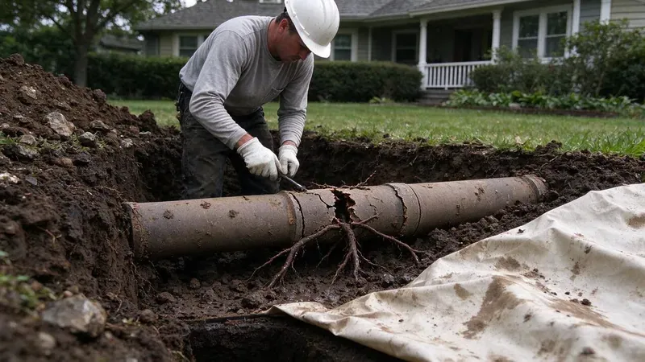
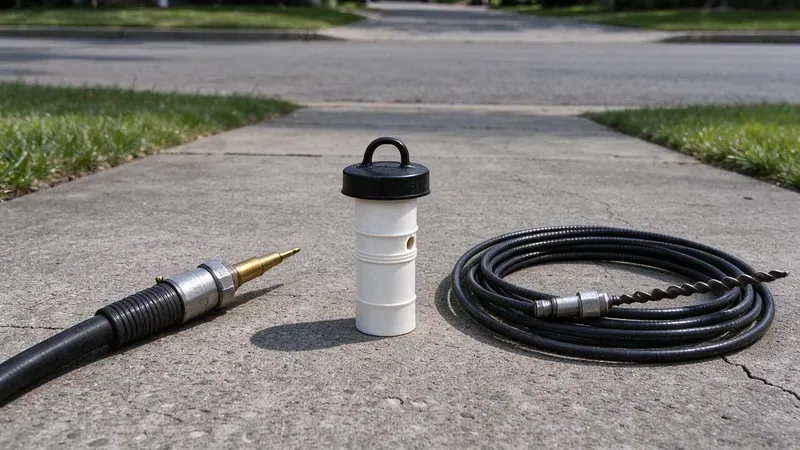

Plumbing Tips & Updates From GNV Plumbing
 15Oct, 2026
15Oct, 2026Slab Leak Warning Signs Every Delaware Homeowner Should Know
Learn the key indicators of a slab leak to protect your home's foundation and plumbing system.
 6Oct, 2026
6Oct, 2026How to Protect Your Pipes Before the Next Delaware Freeze
From long winters to rare cold snaps, a few simple steps keep Delaware pipes from splitting overnight.
 27Sep, 2026
27Sep, 2026Hard Water in Delaware: When a Water Softener Pays for Itself
Learn how a water softener can save you money and extend the life of your plumbing system in Delaware.
 18Sep, 2026
18Sep, 2026Tankless vs. Tank Water Heaters: What Works Best in Delaware
Incoming water temperature, garage conditions and hard water all change the tankless versus tank math for Delaware homes.
 9Sep, 2026
9Sep, 2026Kitchen Sink Backups: Causes, Prevention and Quick Solutions
Got a kitchen sink backup? We cover the common causes, prevention tips, and quick fixes.

31Aug, 2026Underground Pipe Damage: Common Causes and Modern Repair Solutions
Buried water and sewer lines face roots, rocky ground and shifting soil. Modern trenchless methods can fix them without trenching the whole yard.

22Aug, 2026Hydro Jetting vs. Snaking: Which Drain Cleaning Method Do You Need?
Clogged drains are a headache, but knowing the right cleaning method, hydro jetting or snaking, saves you time and money.
 13Aug, 2026
13Aug, 2026Why a Sewer Camera Inspection Belongs on Every Delaware Home Inspection
The sewer line is one of the costliest systems in a home and the one most inspections skip. A camera scope fills that gap.
Have a plumbing question we did not cover?
Our team is happy to talk it through and give you a straight answer.